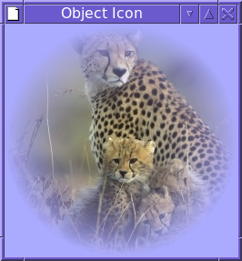

Object Icon’s graphic facilities are based on Icon’s, but with quite a large number of features omitted, and a few added, most notably support for transluscent colours, alpha channels and compositing. Also, the programming interface is re-cast into an object-oriented form, consistent with the rest of the library.
The following notable features in Icon’s graphic facilities are omitted from Object Icon’s :-
Icon’s graphics facilities are described in the following document :- http://www.cs.arizona.edu/icon/docs/ipd281.htm
Use the constructor of graphics.Window to open a window. This gives a hidden window of size 1 pixel by 1 pixel, with default attributes. These can then be modified using setter methods before the window is made visible by setting the canvas type to “normal”. For example :-
w := Window().
set_size(200,200).
set_fg("blue").
set_bg("light grey").
set_font("serif,24").
erase_area().
set_canvas("normal") | stop(&why)The Window class has methods for manipulating the window and drawing in it.
A Window actually encapsulates two separate objects internally, a “canvas” and a “context”.
The canvas is the thing which drawing operations draw onto. This may be just an off-screen image, (a canvas in the “hidden” state; see below), or an off-screen image plus a visible window (a canvas in any other state). In the latter case, the contents of the two are kept in synch automatically.
The context is a collection of drawing attributes, such as background colour, line width and so on (see the next section for the complete list).
The clone method can be used to create a new Window which shares the canvas of another, but has its own context, which starts out at as a copy of the original. For example, suppose we already have a window, w, and wish to draw some text in a particular font in red, but without disturbing the existing font and color settings of w :-
w2 := w.clone().
set_font("typewriter").
set_fg("red)
w2.draw_string(100, 200, "Some text")
w2.close()Note that w2 must be closed after use. Both canvas and context are referenced counted, and not actually released until the last reference is closed.
The methods used to alter the context are as follows :-
| Method | Parameter(s) | Description |
|---|---|---|
set_bg |
string | Background color |
set_fg |
string | Foreground color |
clip |
4xinteger | Clipping region |
unclip |
- | Unset clipping region |
set_draw_op |
string | Compositing operator |
set_dx |
integer | Drawing horizontal offset |
set_dy |
integer | Drawing vertical offset |
set_font |
string | Current text font |
set_leading |
real | Proportion of font height to add as vertical inter-line spacing |
set_line_join |
string | Line joining style to use in drawing |
set_line_end |
string | Line ending style to use in drawing |
set_line_width |
real | Line width to use in drawing |
set_fill_rule |
string | Rule used to fill polygons |
set_pattern |
string or Pixels |
Image to use to fill instead of foreground colour |
set_mask |
string or Pixels |
Image to use as an alpha mask with drawing operations |
There are several corresponding get methods, as well as several methods to retrieve information about the current font’s metrics.
A Window’s canvas can be in one of several different states. Most notably, it can be “hidden”. This means that the Window is just an off-screen image (on X11, this is termed a Pixmap). If a Window is not in the “hidden” state, then it also has a conventional visible window, in one of a selection of states. The following table shows the possible states allowed on the various systems :-
| Type | Meaning | X11 | Windows | Plan9 |
|---|---|---|---|---|
| hidden | Off-screen image only | X | X | X |
| iconic | Minimized window | X | X | X |
| normal | Normal visible window | X | X | X |
| popup | Transient window with no border; used for popup menus | X | X | X |
| fullscreen | A full screen window | X | ||
| maximized | A maximized visible window | X | X | |
| root | The root (background) window | X | ||
| shaded | A visible window with only a title bar | X | ||
| withdrawn | A window not visible in any way | X | X |
The canvas state can be changed with set_canvas, although some state changes are prohibited. The current state can be retrieved with get_canvas. There is also a test program in the examples directory, canvasstate, which allows experimentation with various canvas state and other settings.
The various setter methods for configuring the canvas are summarised in the following table.
| Method | Parameter(s) | Description |
|---|---|---|
set_canvas |
string | Window kind |
set_geometry |
4xinteger | Window position and size |
set_height |
integer | Window height |
set_icon |
string or Pixels |
Window icon |
set_image |
string or Pixels |
Draw an image and set window size to image size |
set_label |
ucs | Window label (title) |
set_max_height |
integer | Maximum window height |
set_max_size |
2xinteger | Maximum window size |
set_max_width |
integer | Maximum window width |
set_min_height |
integer | Minimum window height |
set_min_size |
2xinteger | Minimum window size |
set_min_width |
integer | Minimum window width |
set_pointer |
string | Mouse pointer |
set_pos |
2xinteger | Window position on screen |
set_transient_for |
Window |
Transient-for window |
set_x |
integer | Window x position |
set_y |
integer | Window y position |
set_resize |
flag | Resizable flag |
set_size |
2xinteger | Window size |
set_width |
integer | Window width |
set_base_size |
2xinteger | Base window height for aspect ratio and increment resize calculations (X11 only) |
set_base_height |
integer | Base window height |
set_base_width |
integer | Base window width |
set_increment_size |
2xinteger | Window size increment dimensions during resizing (X11 only) |
set_increment_height |
integer | Increment height |
set_increment_width |
integer | Increment width |
set_min_aspect_ratio |
real | Minimum aspect ratio during resizing (X11 only) |
set_max_aspect_ratio |
real | Maximum aspect ratio during resizing (X11 only) |
Most of the attributes have corresponding get methods.
The aspect ratio and size increment methods in the above list indicate to an X11 window manager how to behave during a window resize. To illustrate this, here is an example program which uses the gui package to display an image and a button, and on a resize keeps the window in the correct aspect ratio so that the image remains nicely sized in the window. It looks like this before and after a resize :-
The interesting part of this program is the initially() method, used to set up the window just before it is displayed :-
public override initially()
local bh, bw, s1, r
Dialog.initially()
if /img.win then
stop("Invalid image")
s1 := img.win.get_size()
bh := get_preferred_height() - s1.height
bw := get_preferred_width() - s1.width
set_base_size(bw, bh)
set_min_size(bw, bh)
r := real(s1.width) / s1.height
set_min_aspect_ratio(r)
set_max_aspect_ratio(r)
write(to_string(wattribs))
ends1 is set to the image size, and bh and bw are set to the preferred height and width respectively, after subtracting the image size. This is the base size, and is subtracted from the window size by the window manager before calculating the aspect ratio. It is necessary to set the minimum size too to satisfy the window manager. Then the aspect ratio is set to the ratio of the image to be displayed.
The various draw and fill methods in graphics.Window class really fall into two categories.
The first category are very basic methods to draw and fill simple rectangular shapes and images. Integer coordinates and dimensions are used (rather than reals). The output should be identical on any platform (excepting font differences). The gui package toolkit restricts itself to using these basic methods only, for the sake of simplicity and portability.
The chief methods in this category are :-
| Method | Parameter(s) | Description |
|---|---|---|
draw_rectangle |
(x, y, width, height, thickness) | |
fill_rectangle |
(x, y, width, height) | |
erase_area |
(x, y, width, height) | |
draw_point |
(x, y) | |
draw_string |
(x, y, s) | |
draw_image |
(x, y, v) | |
copy_to |
(x1, y1, width, height, dest, x2, y2, mask, x3, y3) | |
filter |
(x, y, width, height, filter) |
All of the attributes of the context apply to these methods, with the exception of those relating to line drawing (line width, line join style and line end style).
The second category comprises methods which can be used to draw and fill simple geometric shapes, including ellipses, curves and polygons. These methods alone use real number coordinates and dimensions. The output however may appear somewhat different on different platforms. These methods use all of the context attributes, including the line drawing ones.
The methods in this category are :-
| Method | Parameter(s) | Description |
|---|---|---|
fill_arc |
(x, y, rx, ry, angle1, angle2) | |
fill_circle |
(x, y, r, angle1, angle2) | |
fill_polygon |
(a[]) | |
fill_triangles |
(a[]) | |
draw_polygon |
(a[]) | |
draw_line |
(a[]) | |
draw_curve |
(a[]) | |
draw_circle |
(x, y, r, angle1, angle2) |
Fonts follow the same format as in Icon, with some minor enhancements. An Icon font is specified as a list of comma-separated fields :-
For example :-
serif,bold,18.5
sans,24,italic,mediumFive family names are “standard”, and are interpreted specially :-
Any other family name is interpreted by the underlying font system.
The font attributes fall into several categories, as follows :-
At most one item from each category can be selected in any specification.
The actual interpretation of these various attributes depends on the underlying font system.
The environment variable OI_FONT specifies the default font to use in a window, and OI_FONT_SIZE specifies the default fontsize; if not given the default font size is 12.
Font sizes can also be specified as relative to the default font size, by prefixing with a + or a -, or as a factor of the default font size by prefixing with a *. So for example, if OI_FONT_SIZE was set to “11.5”, then “sans” would be the same as “sans,11.5”, and “sans,+2” would be the same as “sans,13.5”, and “sans,*2” would be the same as “sans,23” A static method, Window.get_default_font_size(), returns the default font size.
On X11, Xft, Fontconfig and Freetype are used for fonts. With fontconfig, further customization can be achieved by editing the user configuration file, found in ~/.config/fontconfig/fonts.conf, and defining patterns for the following family names :-
| Icon font family | Xft family name | Default value |
|---|---|---|
| fixed | Object Icon fixed | mono |
| mono | Object Icon mono | mono |
| typewriter | Object Icon typewriter | courier |
| sans | Object Icon sans | helvetica |
| serif | Object Icon serif | times |
An example entry, which makes the Icon mono family use the “Deja Vu Sans Mono” font, is as follows :-
<match target="pattern">
<test name="family">
<string>Object Icon mono</string>
</test>
<edit name="family" mode="prepend" binding="same">
<string>Deja Vu Sans Mono</string>
</edit>
</match>A font specifier may specify a string to be interpreted directly by the platform’s font system. When using fontconfig, this is done by prepending the string “fc:” to the specifier (for example, “fc:Bitstream Vera Sans-11”). The result of the get_font method will in fact always be in this platform-specific format. Note that the setting of OI_FONT_SIZE has no effect on a font specified in this way.
Colour specifications follow the same format as in Icon, with an enhancement to allow specification of transluscent colours. The following is adapted from the Icon documentation :-
Colors are named by English phrases. Examples are “brown”, “yellowish green”, and “moderate purple-gray”. The syntax of a color name is
[ [“very”] Lightness ] [ Saturation ] [ Hue [ “ish” ] ] Hue [ Opacity ]
where choices enclosed in brackets are optional and a single hyphen or space separates each word from its neighbour. Color names are insensitive to case; purple and Purple are equivalent.
Lightness can be one of dark, deep, light, medium, pale.
Saturation can be one of moderate, strong, vivid, weak.
Hue can be one of black, gray (or grey), white, pink, violet, brown, red, orange, yellow, green, cyan, blue, purple, or magenta.
Opacity specifies an integer percentage alpha channel value; for example “25%”.
Conventional English spelling is used. When adding “ish” to a hue ending in “e”, the “e” is dropped. For example, “purple” becomes “purplish”. The “ish” form of “red” is “reddish”.
When two hues are supplied and the first hue has no “ish” suffix, the resulting hue is halfway between the two named hues. When a hue with an “ish” suffix precedes a hue, the resulting hue is three-fourths of the way from the “ish” hue to the main hue. The default lightness is “medium” and the default saturation is “vivid”.
The special colour specification “transparent” means the colour black, with a zero alpha value.
Colors can also be specified in terms of red, green, and blue brightness components, and an optional opacity value. There are three possible formats :-
Here are some examples of colours which specify an opacity :-
“dark blue 50%” # dark blue, 50% alpha
“45874,0,0,52428” # 70% red, 80% alpha
“#00ffeea0” # 100% green, 93% blue, 63% alpha
“0.1,0.2,0.3,0.4” # 10% red, 20% blue, 30% green 40% alphaThe default opacity in any specification is of course 100% opacity.
Unlike Icon, colour specifications which are not recognized in the above formats are not interpreted by the underlying graphics system.
Image data is represented using the graphics.Pixels class. This is just a two-dimensional array of pixel data, stored in various formats. The data is easy to examine and edit at the pixel level, and is independent of the underlying window system. This is in contrast to a hidden Window, which may at first glance appear similar. In X11 terms, a hidden window is represented as a Pixmap on the server, whilst a Pixels instance is just data on the client.
Pixel data can come from a number of sources :-
WindowTo create an instance from an image file use the Pixels constructor, passing the filename. The constructor is also used to create an instance from raw data. This can easily be done using the preprocessor $load directive to compile image data into the executable. An example of this would be
$load FLINTSTONES "/tmp/flintstones.jpg"
...
i := Pixels(FLINTSTONES)
...The $load directive defines the preprocessor symbol FLINTSTONES with the value being a string containing the contents of the specified file. An advantage of using this technique is that the image file does not of course have to be present at runtime (only at compile time).
To get pixels from a Window, use its get_pixels method, and to create a new blank image, use the Pixels constructor, passing width, height and optionally the desired underlying format. For example :-
i := Pixels(3, 3, Pixels.RGBA32)creates a 3x3 image using 32 bits per pixel. Some formats do not store an alpha channel; in this case reading back from the image always gives an opaque pixel.
A Pixels image can be used with a Window in several ways :-
draw_imageset_pattern; it is then used instead of the foreground colour.set_iconset_imageAfter use, a Pixels instance should be closed in order to free the memory it uses.
Pixels supports paletted images. Rather than storing pixel data directly, indices into a palette of colours are stored instead. Additional methods in Pixels are provided for editing the palette for such formats; in particular load_palette allows a traditional Icon palette to be set as the palette. Window.palette_key can then be used to map a colour to a key for use in the image. Alternatively, the usual Pixels.set method can be used, which simply calculates and applies the closest palette entry for the given input colour. These two methods give slightly different results, as illustrated by the following program :-
import io, graphics, ipl.graphics, ipl.options, ipl.pdco
# Copy a source image to a paletted destination image, and then
# display it, and optionally save it.
#
# With the -k option, the Window.palette_key() method is used to
# calculate each destination pixel's palette index, rather than the
# Pixel's set() method.
#
procedure main(a)
local w, pix, qix, pal, opts, f
opts := options(a, [Opt("w", string, "FILE#Write result to given file"),
Opt("k",, "Use palette_key()")],
"Usage: palette [OPTIONS...] SOURCE-FILE [PALETTE]")
if *a < 1 then
stop("Need a parameter")
pal := a[2] | "c6"
Window.palette_chars(pal) | stop("Invalid palette")
pix := Pixels(a[1]) | stop("Couldn't open image file: ", &why)
# Create a paletted Pixels, with the palette set to the given Icon
# palette.
qix := Pixels(pix.get_width(),
pix.get_height(),
Pixels.PALETTE8).
load_palette(pal)
# Copy data from the source image to the paletted image.
if \opts["k"] then
# Form a string of palette keys by applying Window.palette_key()
# on the source data, and then set the resulting string as the
# paletted image's data.
qix.set_data( String2{ Window.palette_key(pal, pix.gen().pixel) } )
else
# Copy source to destination; this is like calling set() for
# each individual destination pixel.
pix.copy_to(,,,, qix)
# Display the resulting paletted image in a window.
w := Window().
set_image(qix).
set_canvas("normal")
# Optionally save the image to a file.
if f := \opts["w"] then {
write("Writing to file ", f)
qix.to_file(f) | stop("Failed to write image: ", &why)
}
WDone(w)
end
Here is an example output of the above, using the “c6” palette. To the left is the source image. The second image is the result without “-k”, and the third is with “-k”.
And here are some results for other palettes; each run with “-k”.
The compositing operator used by the drawing functions can be set using set_draw_op. The possible values are :-
“atop”, “clear”, “dest”, “dest atop”, “dest in”, “dest out”, “dest over”, “in”, “out”, “over”, “source”, “xor”
The default is “over”.
If a mask is set in the context, then the alpha values from the mask are combined with the colour values of the foreground colour (or the pattern, if set), and then this combination is applied to the destination using the drawing operator.
The mask also applies in two cases where the foreground colour or pattern is ignored. These are draw_image and copy_area.
Here is an example (it requires this image to compile) which illustrates how a mask can be used. It loads an image and creates a circular mask. Both are represented as Pixels instances. Then a window is created and a light blue background set. The mask is set and the image drawn, and so the alpha values of the mask are applied to the image’s pixels, resulting in some of the blue background showing through.
import graphics, ipl.graphics
$load CAT "cheetah_cubs.jpg"
procedure circle_mask(d)
local p, i, j, r2, r, s, a
p := Pixels(d, d, Pixels.A8)
r := d / 2
r2 := r * r
every j := 0 to d - 1 do
every i := 0 to d - 1 do
if (s := (i - r)^2 + (j - r)^2) < r2 then {
a := ((r2 - s) * 65535) / r2
p.set_rgba(i, j, 0,0,0, a)
}
return p
end
procedure main()
local cm, w, cat
# Get the cat image
cat := Pixels(CAT)
# Create a circular mask image. The parameter gives the diameter.
# The further away from the centre of the circle, the more
# transparent is the mask, with the centre being opaque.
cm := circle_mask(cat.get_width())
# Create a destination window with a light blue background.
w := Window().
set_mask(cm).
set_bg("very light blue").erase_area().
set_image(cat)
# Display the destination window.
w.set_canvas("normal")
WDone(w)
end
The cheetah image looks like this in its raw form :-
The resulting window is as follows :-

Unfortunately there is only limited support for compositing and masks in the Windows implementation (which is based on GDI+). Only the “over” and “source” operators are supported, and the mask setting in the context is ignored. The above example would have to be done in a different way, by combining the mask and image Pixels manually, and then drawing the resulting Pixels to the window.
The filter method (based on filter) is used to efficiently transform a rectangular area of pixels, according to one of several pre-defined filters. The available filters are as follows :-
linear. The linear filter accepts 4 float parameters followed by 4 optional integer parameters (which default to zero). Each pair provides a linear transformation to apply to the red, green, blue and alpha values of each pixel. For example
W.filter(,,,, "linear,0.6,0.75,1.0,1.0")shade. This filter accepts three integer parameters, and an optional background colour, which defaults to white. The background colour is specified after the integers, and they are separated by a “:” character. It is a rather specialised filter, used to “grey-out” gui components. The first parameter specifies a range of grey bands. The grey band of the background is calculated. Then each pixel’s grey band value is calculated. If it differs from the background’s band value, then a new grey pixel is calculated by multipling the existing pixel’s grey band value by the second parameter, and adding the third parameter. The default filter used by the “gui” package is :-
W.filter(,,,, "shade,4,5000,40000:" || W.get_bg())Note that the maximum possible new pixel value is 4*5000 + 40000 = 60000, within the defined range of values (ie, 0 - 65535). Out of range values are brought into range anyway.
invert. This filter takes no parameters. Each pixel’s red, green and blue values is replaced with the value 65535 - current value.
coerce. This filter takes one string parameter, namely a palette. Each pixel is coerced into the permitted colors in that palette. Thus the following example transforms the image into one in which each pixel has one of 256 possible greyscale values.
W.filter(,,,, "coerce,g256")Events are generated from a window as lists. The first element of the list gives the event code, which is one of the following. The number and type of the other elements depends on the code.
| Type | Description |
|---|---|
| Mouse.LEFT_PRESS | Mouse left button press |
| Mouse.MIDDLE_PRESS | Mouse middle button press |
| Mouse.RIGHT_PRESS | Mouse right button press |
| Mouse.LEFT_RELEASE | Mouse left button release |
| Mouse.MIDDLE_RELEASE | Mouse middle button release |
| Mouse.RIGHT_RELEASE | Mouse right button release |
| Mouse.DRAG | Mouse drag with any button down |
| Mouse.MOVEMENT | Mouse movement with no button down |
| Mouse.WHEEL_UP | Mouse wheel upward direction |
| Mouse.WHEEL_DOWN | Mouse wheel downward direction |
| Mouse.WHEEL_LEFT | Mouse wheel leftward direction |
| Mouse.WHEEL_RIGHT | Mouse wheel rightward direction |
| Mouse.ENTER | Mouse cursor enters window |
| Mouse.EXIT | Mouse cursor leaves window |
| Window.RESIZE | Window resized |
| Window.MOVE | Window moved |
| Window.STATE | Window canvas state (iconic, normal, etc) changed |
| Window.FOCUS_IN | Window received focus |
| Window.FOCUS_OUT | Window lost focus |
| Window.CLOSE_BUTTON | Window close button pressed |
| Window.INVOKE_LATER | Internal use by gui package |
| Selection.REQUEST | Another application has requested a selection |
| Selection.RESPONSE | Another application has responded to a request for a selection |
| Selection.CLEAR | A selection must be cleared |
| String or ucs | A key representing the given string has been pressed or released |
| Positive integer | A key with the numeric code has been pressed or released |
The class graphics.Key contains a several constants which match the numeric key codes in the last class of event in the above table.
The keyboard and mouse events all produce a list of 5 items (including the initial code) :-
The X11 Window ID number can be retrieved from a window using the get_id method. This returns a string like “0x2a000cb”, which can then be used with external programs to configure or otherwise manipulate the window. Two possible such programs are xdotool and wmctrl.
For example, wmctrl could be used to make a gui dialog “sticky” (ie present on all virtual desktops) :-
class SomeDialog(Dialog)
...
public override init_dialog()
system("wmctrl -i -r " || win.get_id() || " -b add,sticky")
end
...Two environment variables are also X11 specific. OI_RESOURCE_NAME and OI_RESOURCE_CLASS may be used to set the resource name or class name hint of each window, respectively; by default these hints take values based on the program name.
Two environment variables control the X11 selection functionality.
OI_MAX_X_SELECTION_SIZE sets the maximum size (in bytes) of a selection (either sent or received). The default is 2MB.
OI_MAX_X_SELECTION_CHUNK sets the maximum size (in bytes) of a selection to be sent as a single chunk. Larger selections (within the maximum size limit) will be sent as several chunks using X11’s incremental protocol. The default is 64KB.
There is an Object Icon interface to the Cairo 2D graphics library, which can be used as an alternative to the built-in drawing methods. The various classes can be found in the cairo package. There is a program cairotest in the examples directory which shows the various features in action.
Unfortunately this library is only available under X11.
The Xrender extension allows clients to draw shapes by drawing lists of either of the above simple geometric shapes. However, the performance of the two alternatives differs considerably, depending on the X server driver being used.
OI_X_TRIANGLES indicates when to use triangles, as opposed to trapezoids. If zero or unset, then triangles are not used. If 1, then triangles are used when they are most appropriate for the particular drawing operation. If 2, then triangles are always used.
{kind=link}